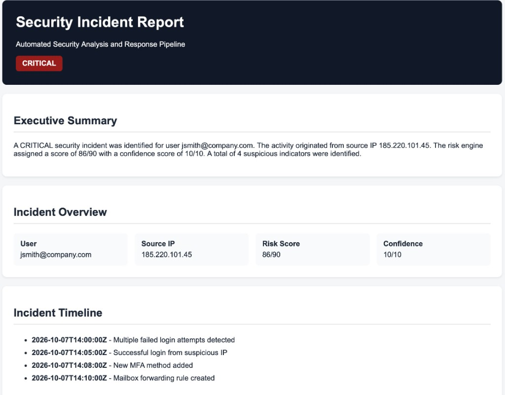

Detect
Sign-in rules for brute force, spray, impossible travel, and MFA fatigue.
The1keyy/security-automation-pipeline
Detects, enriches, scores, and responds to security events automatically.
A Python lab for one suspicious sign-in. It checks threat intel, scores the risk, and writes a report. Containment waits for a person.

Sign-in rules for brute force, spray, impossible travel, and MFA fatigue.
Eight sources. One failure does not stop the others.
Threat, behavior, impact, and correlation, capped at 90.
Allowlists, playbooks, dry-run, audit, and approval before containment.
Plain text and HTML for an analyst to read.
Synthetic scenarios only: precision 1.00, recall 1.00, false-positive rate 0.00. Not production accuracy.

Severity: CRITICAL Risk Score: 86/90 Confidence: 10/10 Action: PREAPPROVED_PLAYBOOK_ONLY Requires Approval: True Automatic: False
A SOC cannot investigate every alert. This pipeline adds context, a separate confidence score, and a person in the loop before containment.
It is a synthetic portfolio lab, not a production detection benchmark, and it does not change live accounts, sessions, or firewall rules.
python3 -m venv .venv && source .venv/bin/activate pip install -r requirements.txt pytest
Copy .env.example to .env before python3 main.py. The names are ABUSEIPDB_API_KEY, VIRUSTOTAL_API_KEY, GREYNOISE_API_KEY, and OTX_API_KEY.
Ideas to extend: new detectors, enrichment sources, playbooks, and report formats.
detections/ sign-in rules enrichment/ IP intel lookups and a local cache risk/ explainable score and severity response/ approval, allowlists, playbooks, dry-run, audit, rollback reports/ text and HTML writers, plus reports/sample/ tests/ pytest suite config/ weights and thresholds sample_logs/ synthetic events ss/ screenshots from lab runs docs/ GitHub Pages site
The score is research-inspired. It does not reproduce the cited models, and it does not calculate CVSS.